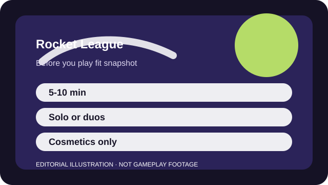

BEFORE YOU PLAY
What this page is and is not
This is a sourced editorial fit profile. It is designed to help with a yes-or-no play decision, and it does not claim a scored hands-on review.
Because the objective is instantly readable, the real fit question is whether you enjoy failing at a skill for a while before it feels elegant. Players who love self-improvement usually stick. Players who need constant new systems often bounce.
The first-session loop to judge is simple: Control the car cleanly enough to challenge the ball, rotate intelligently, and slowly add more mechanical range.
Progression is mostly skill, rank, and cosmetics rather than account power.

FIT SNAPSHOT
Rocket League at a glance
| Genre | Sports action |
|---|---|
| Platforms | PC, PlayStation, Xbox, Switch |
| Business model | Free-to-play competitive sports game with cosmetic bundles and season passes. |
| Typical session | 5-10 minute matches that are easy to stack into a short session. |
| Play style | physics-based competitive sports |
| Learning barrier | The objective is obvious immediately, yet advanced movement and recovery take real practice. |
| Social shape | Rocket League works solo, in duos, or in full teams; voice helps, but even casual pings or chat can be enough. |
WHO IT FITS
Best fit, likely friction, and the social reality
players who want five-minute matches and almost endless room to refine mechanics
players who need RPG progression, heavy onboarding, or forgiving ranked ladders
Rocket League works solo, in duos, or in full teams; voice helps, but even casual pings or chat can be enough.
Progression is mostly skill, rank, and cosmetics rather than account power.
FIRST SESSION PLAN
How to test the fit in one evening
- Stay in casual 2v2 or 3v3 before trying to judge ranked stress.
- Learn boost management and camera toggle before worrying about aerial highlights.
- Use free play for a few calm minutes between matches instead of one long grind block.
- Judge your enjoyment by whether basic movement practice feels satisfying, not by your first win rate.
Use the first session to answer these fit questions instead of judging rank, win rate, or store value immediately.
- Do you enjoy repeating the same simple ruleset until your control becomes expressive?
- Can you handle being bad at a game that looks easy to understand?
- Do you value short matches more than heavy progression systems?
TIME, COST, AND COMMITMENT
What you are really signing up for
| Session budget | 5-10 minute matches that are easy to stack into a short session. |
|---|---|
| Social demand | Rocket League works solo, in duos, or in full teams; voice helps, but even casual pings or chat can be enough. |
| Progression shape | Progression is mostly skill, rank, and cosmetics rather than account power. |
| Spending pressure | Gameplay is free. Monetization is centered on the pass and optional cosmetic bundles. |
Rocket League respects tight schedules, but the skill ceiling is high enough that it can quietly become your main competitive hobby.
Gameplay is free. Monetization is centered on the pass and optional cosmetic bundles.
SOURCES AND LIMITS
What was checked, and what can change
- Season challenges and pass structures rotate regularly.
- Limited modes and licensed cosmetic bundles can change the surrounding appeal.
- Competitive playlist rules or ranking presentation can shift over time.
This profile uses official game pages and defensible general product knowledge to frame the player fit. It does not claim live testing across every platform, accessibility need, or current event rotation.